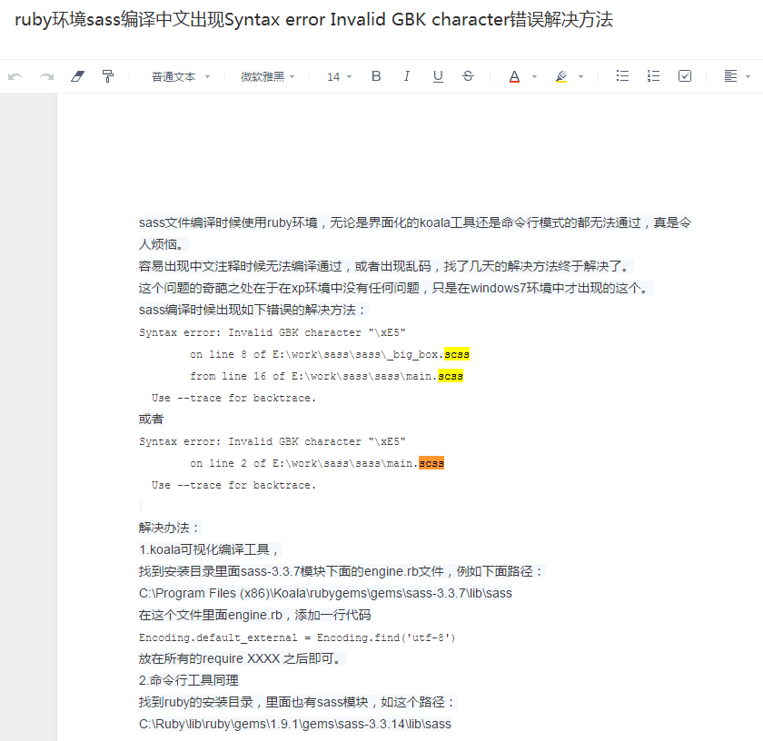

sass
公司终于不是我一个前端了，为了大家更好的合作，需要一些规范。同时希望能开发几套UI和组件方便以后代码的重用。
先从sass开始记录好了。
以下有部分参考Sass参考手册
Sass 是对 CSS 的扩展，让 CSS 语言更强大、优雅。 它允许你使用变量、嵌套规则、 mixins、导入等众多功能， 并且完全兼容 CSS 语法。 Sass 有助于保持大型样式表结构良好， 同时也让你能够快速开始小型项目， 特别是在搭配 Compass 样式库一同使用时。
特色
- 完全兼容 CSS3
- 在 CSS 语音基础上添加了扩展功能，比如变量、嵌套(nesting)、混合(mixin)
- 对颜色和其他值进行操作的函数 {Sass::Script::Functions 函数}
- 函数库控制指令之类的高级功能
- 良好的格式，可对输出格式进行定制
- 支持 Firebug
语法
Sass有两种语法，后缀名不同.sass和.scss。
Sass 基本语法（后缀名为.sass）：
1
2
3
4
5
6$width: 100px
$color: #333
div
width: $width
color: $color
SCSS（后缀名为.scss） 是 Sass 3 引入新的语法，其语法完全兼容 CSS3，并且继承了 Sass 的强大功能。也就是说，任何标准的 CSS3 样式表都是具有相同语义的有效的 SCSS 文件。另外，SCSS 还能识别大部分 CSS hacks（一些 CSS 小技巧）和特定于浏览器的语法，例如：古老的 IE filter 语法。
1
2
3
4
5
6
7$width: 100px;
$color: #333;
div{
width: $width;
color: $color;
}
可以看出，.scss的语法需要花括号和分号（对空白符合不敏感），.sass需要换行和缩进。
使用Sass
Sass 有三种使用方式： 命令行工具、独立的 Ruby 模块，以及包含 Ruby on Rails 和 Merb 作为支持 Rack 的框架的插件。 所有这些方式的第一步都是安装 Sass gem：
gem install sass
我用的是mac,windows的安装方式就不提了。
运行Sass:
sass input.scss output.css
命令Sass监视文件的改动并更新CSS:
sass --watch input.scss:output.css
如果你的目录里有很多 Sass 文件，你还可以命令 Sass 监视整个目录：
sass --watch app/sass:public/stylesheets
以下仅记录我自己常用的sass语法。
变量,sass允许使用变量，所有变量以$开头
1
2
3
4$defaultColor : #333;
div{
width: $defaultColor;
}如果变量需要镶嵌在字符串之中，就必须写在#{}中。
1
2
3
4$backgroundImg: bg;
div{
background: url(images/#{$backgroundImg}.jpg);
}计算功能
1
2
3
4$fontSize: 1em;
div{
font-size: $font-size * 2;
}嵌套
1
2
3
4
5
div{
p{
color: red;
}
}
属性也可以嵌套，比如font-size,font-weight等属性，注意font后需加上冒号。
1
2
3
4
5
6
div{
font:{
size: 12px;
weight: bold;
}
}
在嵌套的代码内，&可用来引用父元素，比如a:hover可写作如下：
1
2
3
4
5
a{
&:hover{
color: blue;
}
}
函数
1
2
3
4
5
6
7
8@function pxToRem($px){
@return $px / $baseFontSize * 1rem;
}
//引用函数
div{
width: pxToRem(100px);
}@minux，可重用的代码块，可与函数，条件选择等结合
1
2
3
4
5
6
7
8
9
10
11
12
13
14
15
16
17@mixin align-items ($align) {
@if $align == flex-start {
-webkit-box-pack: start;
} @else if $align == flex-end {
-webkit-box-pack: end;
} @else {
-webkit-box-align: $align;
}
-moz-align-items: $align;
-webkit-align-items: $align;
align-items: $align;
}
//引用
div{
@include align-items(cennter);
}@extend，继承
1
2
3
4
5
6
7
8
.setColor{
color: red;
}
//引用
.main{
@extend .setColor;
}
@import，用来插入外部文件
引入.scss文件，生成后的.css文件会把代码合并到一起，若是引入.css文件，等同于css的import命令。
1
@import "path/filename.scss";
注释
1
2
3
4
5
6
7// 单行注释，只保留在sass源文件中
/* 注释，会保留到编译后的文件 */
/*!
重要注释，/*后面加感叹号，即使是压缩模式编译，也会保留
*/
此外，同事遇到的坑，用中文会报错，需要修改一下文件，以下为解决方法。
